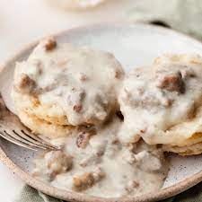

Biscuits and Gravy

Hearty Biscuits with Sausage Gravy!
This hearty plate of biscuts with sausage gravy is the perfect meal to start a weekend morning!
Ingredients
- 1 package of buttermilk biscuits
- 6 cups whole milk
- 3/4 cup all purpose flour
- 1lb ground breakfast sausage
- Salt and pepper
Steps
- Cook biscuits to package directions. While biscuits are cooking, prepare gravy.
- Coat pan lightly with oil and set heat to medium.
- Add ground sausage and chop into pieces with spatula.
- Once sausage is cooked, stir in flour to coat sausage. Let cook for 2-3 minutes to remove rawness.
- Add 2 cups of milk and stir. Let gravy cook until thickened.
- Repeat step 5 until milk is gone.
- Salt and pepper to taste
- Serve and enjoy!